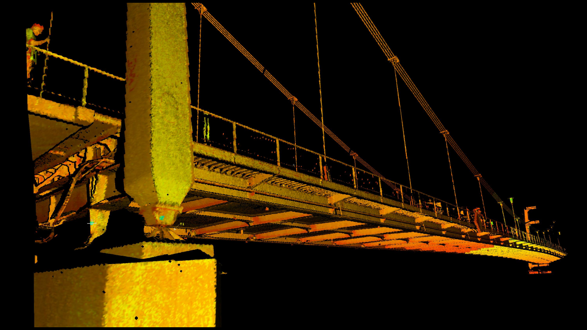
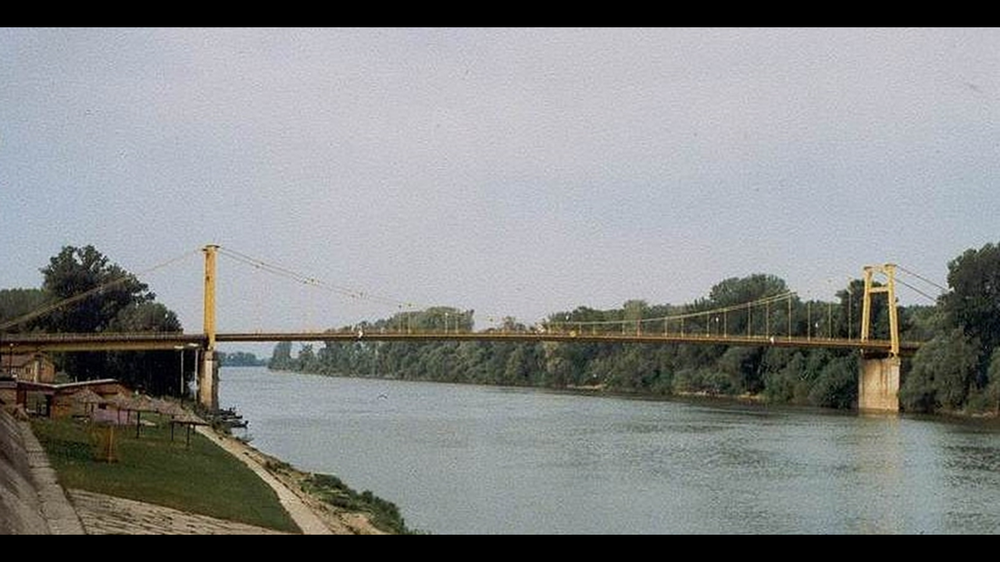
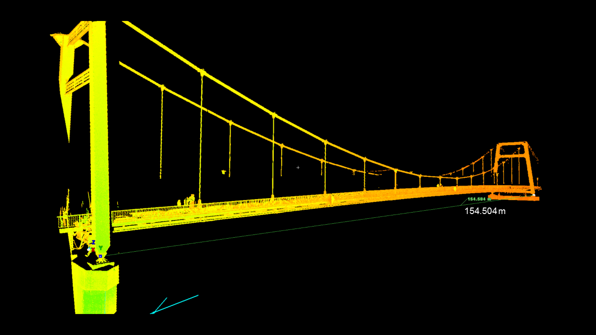
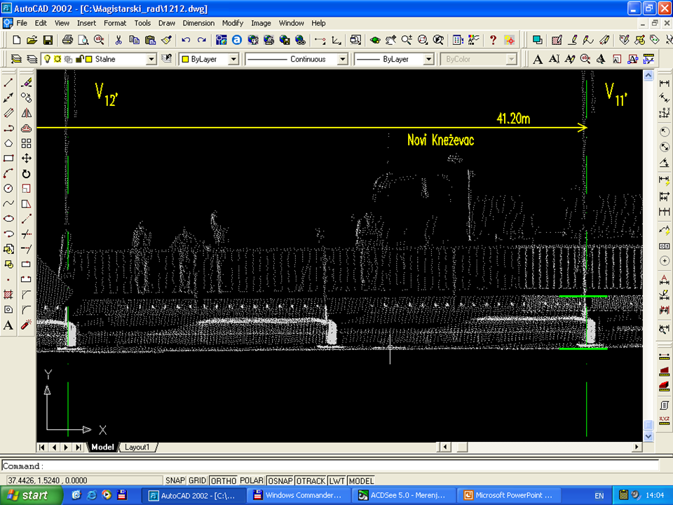
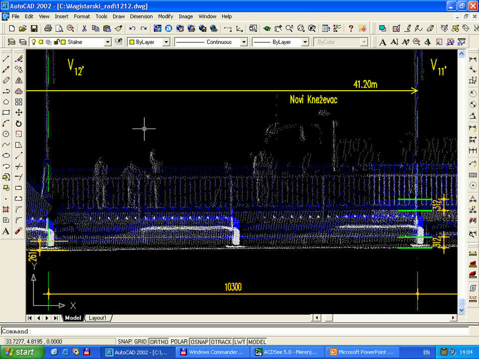
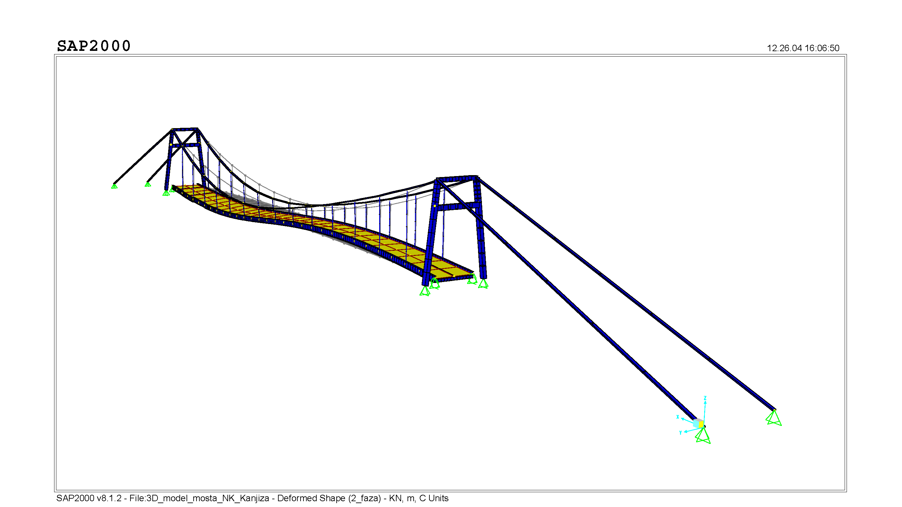

Магистарски рад
Тема: ПРИЛОГ АНАЛИЗИ КРИТЕРИЈУМА УПОТРЕБЉИВОСТИ МОСТОВСКИХ КОНСТРУКЦИЈА ИНТЕРАКЦИЈОМ РАЧУНАРСКЕ СИМУЛАЦИЈЕ И ЛАСЕРСКОГ 3Д СКЕНИРАЊА
Дигитализовани 3Д модел моста - Ласерско 3Д скенирање моста, 03.06.2003.године
- 
3Д ласерско скенирање (Cyrax 2500) - леви део главног отвора моста.(поглед низводно са леве обале)
 Друмски ланчани мост преко реке Тисе на путу Кањижа - Нови Кнежевац.(један од објеката научног теоријско експерименталног истраживања)
Друмски ланчани мост преко реке Тисе на путу Кањижа - Нови Кнежевац.(један од објеката научног теоријско експерименталног истраживања) 3Д ласерски скенер - Leica Cyrax HD 2500.(оператери: Угљеша и Марко)
3Д ласерски скенер - Leica Cyrax HD 2500.(оператери: Угљеша и Марко) 3Д ласерско скенирање - средњи део главног отвора моста.(поглед низводно са леве обале)
3Д ласерско скенирање - средњи део главног отвора моста.(поглед низводно са леве обале)- 
Друмски ланчани мост преко реке Тисе на путу Кањижа - Нови Кнежевац.(један од објеката научног, теоријско експерименталног истраживања)
 3Д ласерско скенирање - Leica Cyrax HD 2500.(дана: 03.VI.2003. године)
3Д ласерско скенирање - Leica Cyrax HD 2500.(дана: 03.VI.2003. године) 3Д ласерско скенирање - леви део главног отвора моста.(поглед низводно са леве обале)
3Д ласерско скенирање - леви део главног отвора моста.(поглед низводно са леве обале)- 
3Д ласерско скенирање - главни отвор моста.(поглед низводно са леве обале)
Поступак 3Д ласерског скенирања ( ... кликом на стрелицу доле покрените презентацију )
Геометријски 3Д модел моста - читање вертикалних померања
 Layer 1 - 3Д облак тачака.(неоптерећен мост)
Layer 1 - 3Д облак тачака.(неоптерећен мост)- 
Layer 2 - 3Д облак тачака.(оптерећен мост)
- 
Преклопљени Layer 1 преко Layer 2.(читање хоризонталних и вертикалних померања)
Интересовање после одбране магистарског рада
Vekom Geo : Примена скенера Leica P50 на пројекту скенирања моста на Ђурђевића Тари.
Објекат: Мост на Тари
Пројектант:
Пројектант скеле и руководилац грађења: Richard CORAY
Извођач радова: Антоновић а.д., Београд-Панчево
Време изградње: 1938-1940.
Краћи технички подаци:
Друмски армирано бетонски мост сложеног статичког система, су структуре конструктивног система једног већег лука, четири мања лука и два правоугаона отвора моста (116+4x44.08+2х17.00=326.32m) укупне дужине од L=373.52m, са ширином B=5.50+2x0.5=6.50m (две саобраћајне траке и две пешачке стазе), и ограђен оградом моста висине H=1.10m.
Налази се у Црној Гори између села Будечевица и Трешњица, повезује магистарлним путем Пљевља и Жабљак премошћавајући кањон реке Таре са великим лучним отвором дубине око 150m.
Попречни пресеци пуних носача система лука везаних пуном мембраном у половини висине по целој дужини су у темељу 74/210cm, над ослонцима 120/300cm. Мост је у кривини пута.
Руководилац испитивања моста: проф. др Мирко РОШ, дипл.инж.грађ. прилог, 1940.
02.06.2020.: - линк поставио, ИММ

Historical : Leica Geosystems AG
16.02.2021. -- поставио линк, ИММ
 Прва фаза - лево постављено симетрично оптерећење.(деформација модела, SAP2000n )
Прва фаза - лево постављено симетрично оптерећење.(деформација модела, SAP2000n )- 
Друга фаза - лево постављено несиметрично оптерећење.(деформација модела, SAP2000n)
 Трећа фаза - десно постављено симетрично оптерећење.(деформација модела, SAP2000n)
Трећа фаза - десно постављено симетрично оптерећење.(деформација модела, SAP2000n) Четврта фаза - десно постављено несиметрично оптерећење.(деформација модела, SAP2000n)
Четврта фаза - десно постављено несиметрично оптерећење.(деформација модела, SAP2000n)
Резиме: У истраживању који је пре-дмет овог рада, полази се од чиње-нице да се код мостовских конст-рукција у току екплоатације појав-љују дефекти, који могу да угрозе безбедност саобраћаја услед нару-шавања пројектоване нивелете моста, а исто тако и његову лока-лну и глобалну стабилност. Про-мене у понашању конструкције ана-лизирају се са гледишта употреб-љивости као једног од критеријума којим се задовољавају прописани захтеви. На тај начин дефинисана је и та посебна сфера инжењерског интересовања.
У раду је посебна пажња покло-њена инжењерском приступу ра-чунским моделима, моделирању уопште, класификацији модела са посебним освртом на интеракцију базних параметара. Успостављена је оцена прорачунских модела на основу степена поузданости описа стварног понашања мостовских конструкција као основног усвојеног критеријума.
Исто тако установљен је и крите-ријум корисничке угодности као један од услова за избор програм-ског пакета за статички прорачун, кроз успостављање боље интерак-ције рачунарских програма CAD – CAA окружења.
Кроз преглед домаће и европске техничке регулативе, дата је препорука за усклађивање стан-дарда који се односе на делове техничке документације с обзиром на прорачун конструкција приме-ном рачунарских програма, као и доследније поштовање важећих прописа.
Предложена методологија у овом раду илустрована је на примеру испитивања друмског ланчаног моста преко реке Тисе "Мост Победе" на путу Кањижа – Нови Кнежевац, под утицајем статичког пробног оптерећења. Системом за мерење и моделирање Cyra Tech-nologies, Inc. ласерским скенира-њем, приликом испитивања, утвр-ђена је промена геометрије ви-талних конструктивних елемената моста. Анализом података нивел-манске оскултације и ласерског 3Д скенирања промене геометрије, уз помоћ рачунарских симулације, успоставњени су одговарајући кри-теријуми употребљивости посмат-раног моста.
Као мера од посебног значаја ин-систира се на ХИТНОЈ, неодлож-ној и свеобухватној реализацији санације виталних елемената кон-струкције друмског моста преко реке Тисе на путу Кањижа – Нови Кнежевац.